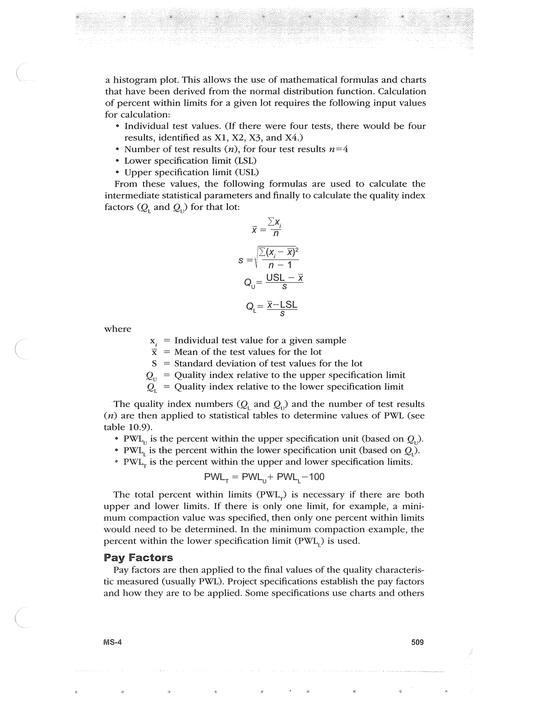

PDF page 543 · book page sequence 509


Searchable transcription
Unproofread OCR · 322 detected words; mean OCR confidence 92.61. Check technical values, symbols and table columns against the scan.
a histogram plot. This allows the use of mathematical formulas and charts that have been derived from the normal distribution function. Calculation of percent within limits for a given lot requires the following input values for calculation:
° Individual test values. (if there were four tests, there would be four
results, identified as X1, X2, X3, and X4.)
¢ Number of test results (7), for four test results n=4
° Lower specification limit (LSL)
° Upper specification limit CUSL)
From these values, the following formulas are used to calculate the intermediate statistical parameters and finally to calculate the quality index factors (Q, and Q,,) for that lot:
where
= Individual test value for a given sample
= Mean of the test values for the lot
Standard deviation of test values for the lot
Q, Quality index relative to the upper specification limit Q, = Quality index relative to the lower specification limit
lI
rial
Ul
The quality index numbers (Q, and Q,) and the number of test results (1) are then applied to statistical tables to determine values of PWL (see table 10.9).
° PWL, is the percent within the upper specification unit (based on Q,).
° PWL, is the percent within the lower specification unit (based on Q,).
* PWL, is the percent within the upper and lower specification limits.
PWL, = PWL,+ PWL,-100
The total percent within limits (PWL,) is necessary if there are both upper and lower limits. If there is only one limit, for example, a mini- mum compaction value was specified, then only one percent within limits would need to be determined. In the minimum compaction example, the percent within the lower specification limit (PWL,) is used.
Pay Factors
Pay factors are then applied to the final values of the quality characteris- tic measured (usually PWL). Project specifications establish the pay factors and how they are to be applied. Some specifications use charts and others
MS-4 509